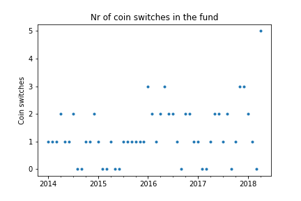

Indexing and cryptocurrencies¶
Portfolio theory has not influenced the cryptocurrency market yet. There are thousands of cryptocurrencies, and many hundreds are traded on large exchanges. But out of the few people that have bought cryptocurrencies, owning only 1-3 different cryptocurrencies is the norm.
Just like different companies operate in distinct sectors, different cryptocurrencies try to solve different problems - some focus on building a general purpose scripting language and others on integrating their software with the current banking system. Just like stocks, cryptocurrencies have a lower correlation that makes them suitable to be included in a portfolio. As seen in the figure, the correlation between cryptocurrencies is around 0.20 which is lower than the correlation between stocks. Therefore indexing makes even more sense with cryptocurrencies than it does for the stock market.

testing¶

in this figure we see that the size should be larger!